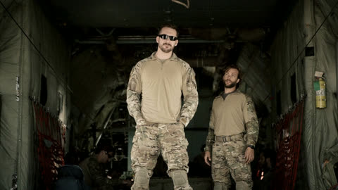
E0114:01Pilot
From episode 01 · 1.82 GB
Character scene packs from both seasons of SIX, cut directly from the Blu-ray. 1080p · 24 fps.

8 scene packs · 1:34:13 · 15.5 GB

E0114:01From episode 01 · 1.82 GB
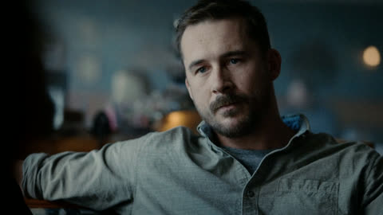
E0214:05From episode 02 · 1.83 GB
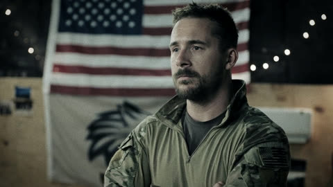
E0310:57From episode 03 · 1.83 GB
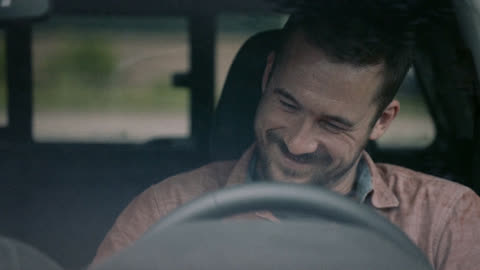
E0411:19From episode 04 · 1.83 GB
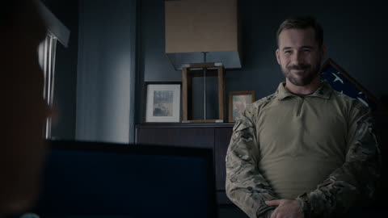
E0519:19From episode 05 · 2 parts · 3.65 GB
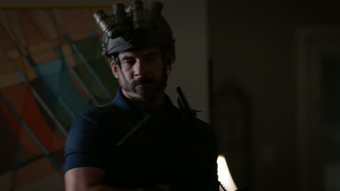
E069:58From episode 06 · 1.83 GB
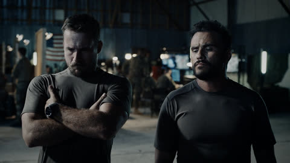
E077:19From episode 07 · 1.36 GB
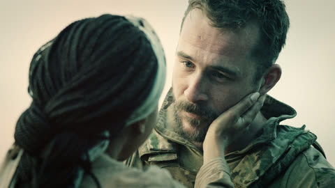
E087:15From episode 08 · 1.39 GB
10 scene packs · 1:27:20 · 13.5 GB
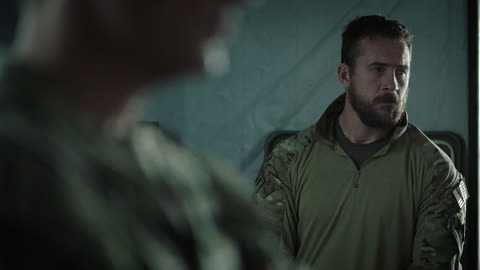
E019:25From episode 01 · 1.50 GB
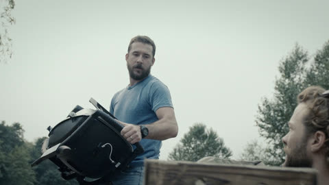
E0211:35From episode 02 · 1.82 GB
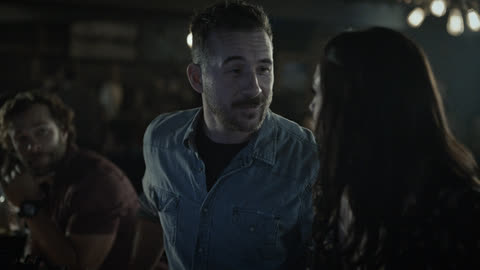
E037:48From episode 03 · 1.30 GB
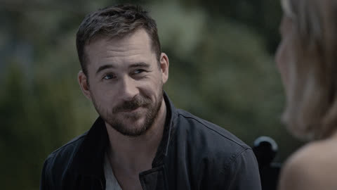
E046:47From episode 04 · 1.12 GB
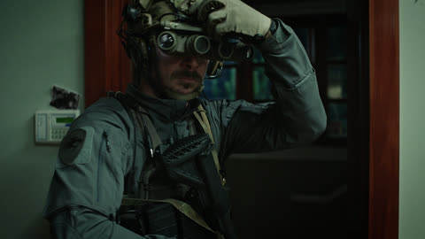
E055:13From episode 05 · 0.87 GB
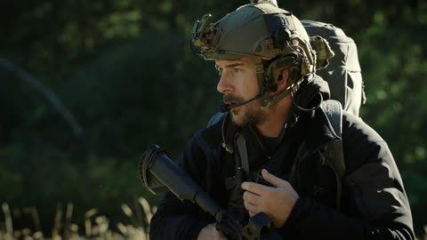
E068:33From episode 06 · 1.26 GB
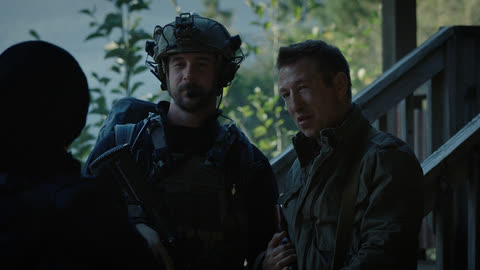
E078:06From episode 07 · 1.24 GB
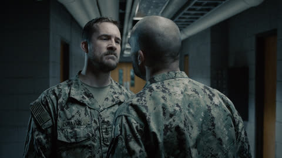
E086:57From episode 08 · 1.24 GB
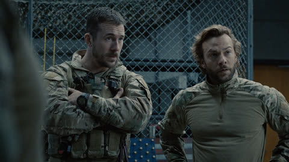
E098:05From episode 09 · 1.35 GB
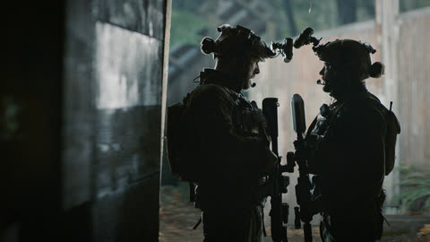
E1014:51From episode 10 · 1.83 GB
Joe Graves scene packs, cut directly from the Blu-ray.
1920 × 1080 · 24 fps · H.264 / AAC.
The first or last frame may occasionally belong to the adjacent scene.